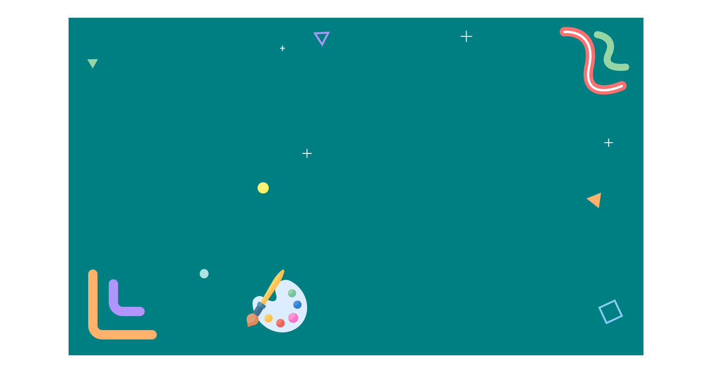

ABOUT ME!



I am a graphic designer/illustrator based
in the OC with an interest in UI/UX design.
I recently graduated from UC Riverside in
2019 with a B.A. in Psychology with an
Education minor. Though these were the
subjects I studied, my ultimate passion is
in design and I am always looking for ways
to improve and learn more about the field.
I have taught myself how to utilize
programs, such as Adobe Photoshop
and Illustrator, to improve my design skills
and to ultimately achieve my goal. I am
very passionate about the art/designs
I create and always strive to improve myself
whenever I can by actively trying to seek
opportunities through leadership roles,
work experiences, and life in general.
Check out my resume by clicking below!